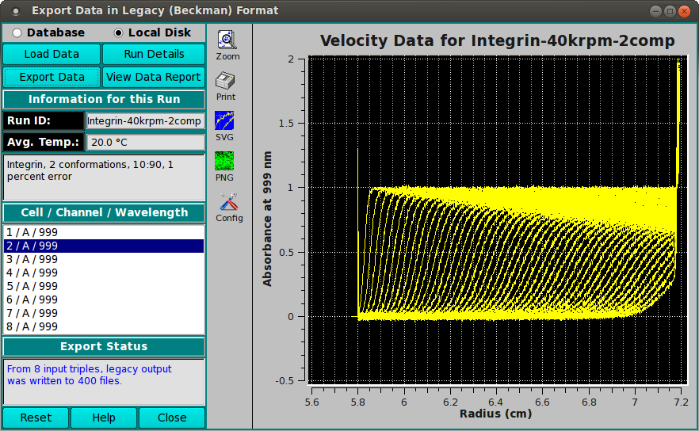

UltraScan Export Data in Legacy Format:
This module enables you to load a run in UltraScan III format and
export the data to files in legacy (Beckman) format.
Main Window (after completing an export):

Functions:
-
Database Select to specify data input from the database.
-
Local Disk Select to specify data input from local disk.
-
Load Data Click here and, in the resulting
Load Data Dialog, select a run ID
for the data set to load.
-
Run Details Pop up a dialog showing run details.
-
Export Data Click to export all triples of the data to
files in legacy (Beckman) format.
-
View Data Report Generate a report file and view it in
a dialog.
-
Run ID: The Run identifier string is displayed
for the loaded data sets.
-
Avg. Temp.: The average temperature over all the
scans of the currently selected triple.
-
(experiment description) A text string is displayed giving
a fairly detailed description of the experiment.
-
Cell / Channel / Wavelength One or more rows of raw data
triples. Click on a row to display its data in the plot window
to the right.
-
Export Status This text window displays continually updated
summaries of computational activity and results.
-
Reset Reset all parameters to defaults.
-
Help Display this and other documentation.
-
Close Close the window and exit.
-
(right side plot) This plot shows the Experimental data
for the currently selected triple.
 Manual
Manual